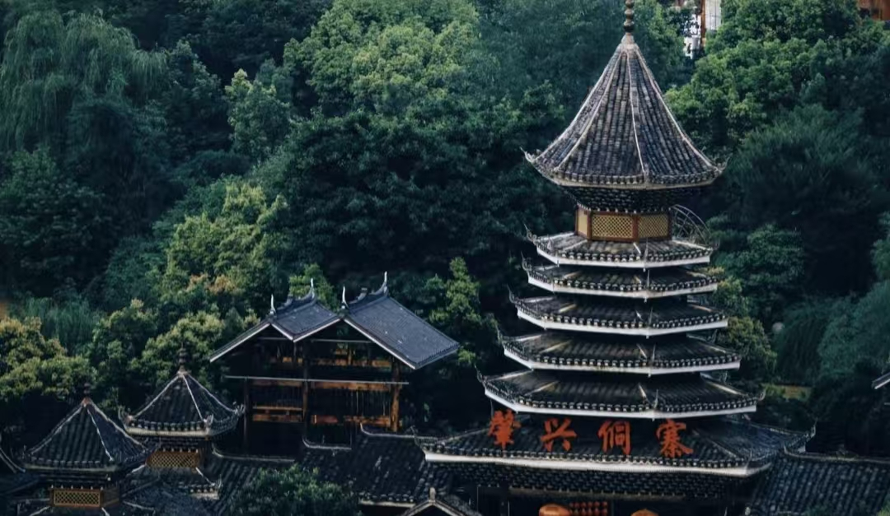
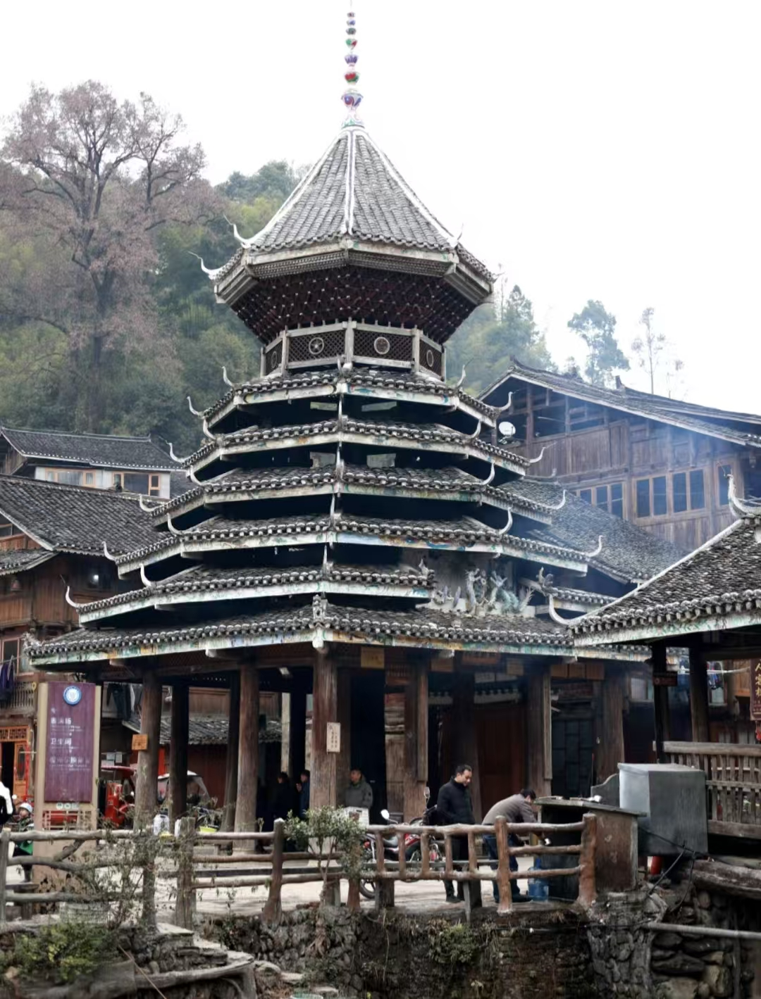
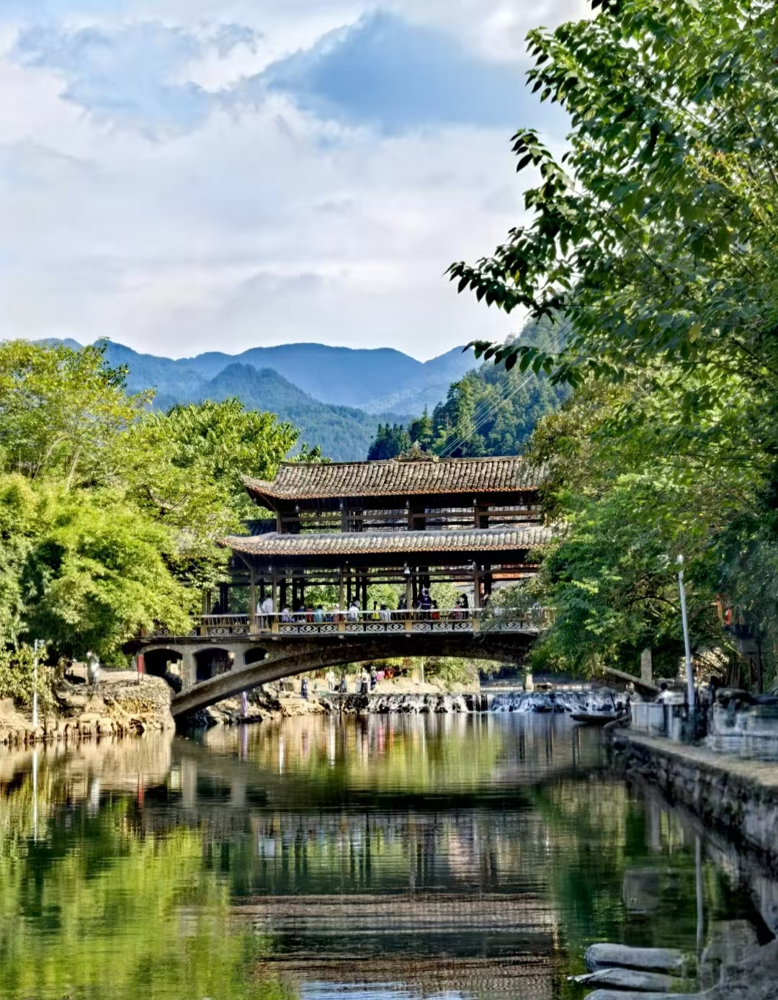
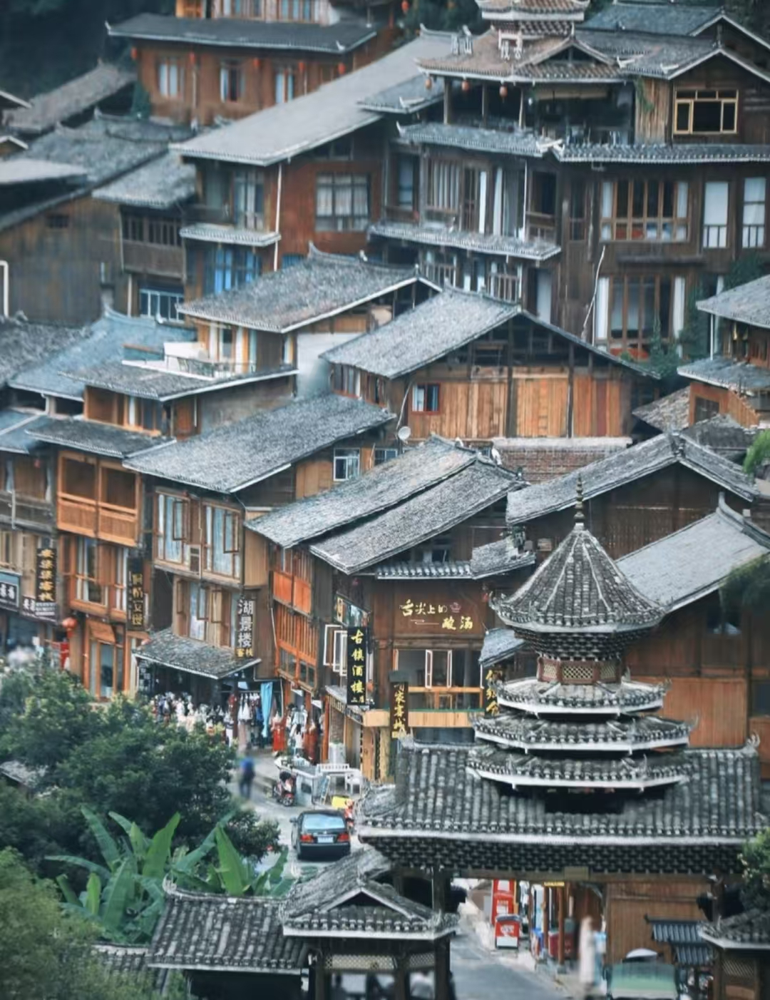
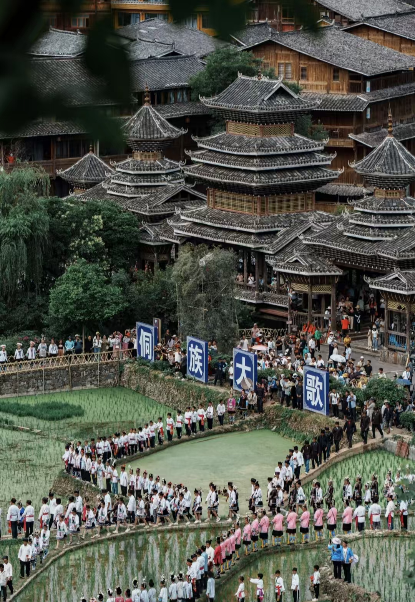
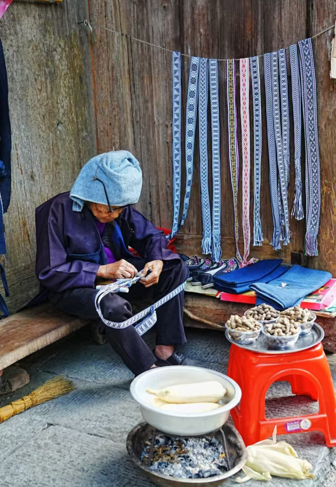
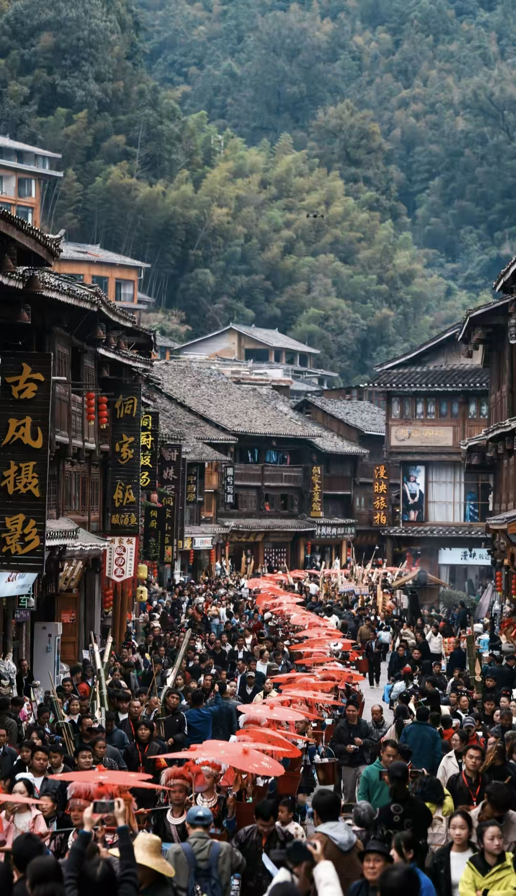
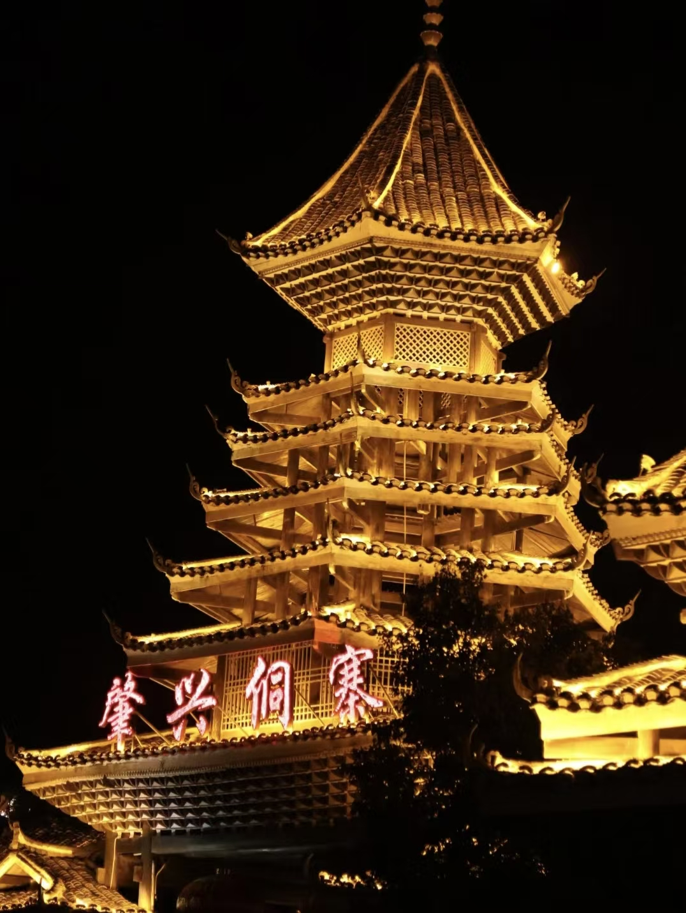

肇兴侗寨
侗族第一寨，鼓楼之乡，联合国世界文化遗产
景点简介
肇兴侗寨景区是国家4A级旅游景区、省级旅游度假区，位于贵州省黔东南苗族侗族自治州黎平县东南部，黔、湘、桂三省交接地段（与湖南怀化和广西桂林毗邻），属于国家重点风景名胜区之一。目前建成核心区占地面积18平方公里，居民1200余户5200余人，是全国最大的侗族村寨之一，素有“侗乡第一寨”之美誉。以肇兴侗寨为核心的“八寨一山”，涵盖堂安、厦格、厦格上寨、己伦、纪堂、登江、上地坪八个侗寨和侗家人的圣山——萨岁山，构成约34平方公里的侗族文化旅游区，总人口达一万余人。

主要景观

五座鼓楼
寨内分布着仁、义、礼、智、信五座鼓楼，每座鼓楼都有独特的建筑风格和装饰，是侗族建筑的精华。

风雨桥
横跨在寨内溪流上的廊桥，既是交通要道，也是村民休闲聚会的场所，桥上有精美的木雕装饰。

侗族民居
传统的干栏式建筑，底层架空，上层住人，具有防潮、防虫、通风良好的特点，体现了侗族人民的智慧。

侗族大歌
世界非物质文化遗产，多声部无指挥无伴奏合唱，歌声悠扬动听，展现了侗族人民的音乐天赋。
游览攻略
🚶♂️ 推荐路线
- 寨门入口 → 仁团鼓楼：参观第一座鼓楼（约30分钟）
- 仁团鼓楼 → 风雨桥：漫步廊桥（约20分钟）
- 风雨桥 → 其他鼓楼：依次参观五座鼓楼（约1.5小时）
- 鼓楼区域 → 侗族民居：了解民居建筑（约1小时）
- 民居区 → 侗族大歌表演：观赏歌舞表演（约1小时）
📸 最佳拍摄点
- 寨门观景台：拍摄侗寨全景
- 鼓楼前广场：拍摄鼓楼建筑细节
- 风雨桥上：拍摄廊桥和溪流
- 傍晚时分：拍摄侗寨夜景和灯光
⚠️ 注意事项
- 尊重侗族风俗习惯
- 拍照前请征得被拍摄者同意
- 保护古建筑，不要触摸和刻画
- 体验民族活动时保持礼貌
特色体验

侗族文化体验
参与侗族刺绣、织布、银饰制作等传统手工艺活动，了解侗族文化的独特魅力。
侗族美食体验
品尝侗族特色的酸汤鱼、腌鱼、油茶、糯米饭等美食，感受地道的侗族风味。

民族节日体验
参与侗族的传统节日活动，如吃新节、侗年等，体验浓厚的民族节日氛围。

夜游侗寨
夜晚的肇兴侗寨灯火辉煌，鼓楼和风雨桥在灯光映衬下更加美丽，是摄影的好时机。
交通信息
🚌 公共交通
从贵阳出发：
- 贵阳金阳客运站乘坐直达黎平班车
- 发车时间：8:30、10:30、14:30
- 车程：约5小时
- 票价：120元/人
🚗 自驾路线
贵阳 → 肇兴侗寨：
- 贵新高速 → 厦蓉高速 → 肇兴出口
- 全程约320公里
- 车程约4.5小时
- 景区停车场收费：15元/天
🚄 高铁到达
贵广高铁：
- 乘坐高铁至从江站
- 转乘旅游专线至肇兴
- 全程约3.5小时
- 票价：高铁100元 + 专线20元
周边景点推荐
堂安侗寨
距离：约5公里
特色：梯田景观，原生态侗寨
游玩时间：2-3小时
黄岗侗寨
距离：约15公里
特色：保存完好的古老侗寨
游玩时间：2-3小时
地坪风雨桥
距离：约20公里
特色：国家级文物保护单位
游玩时间：1-2小时